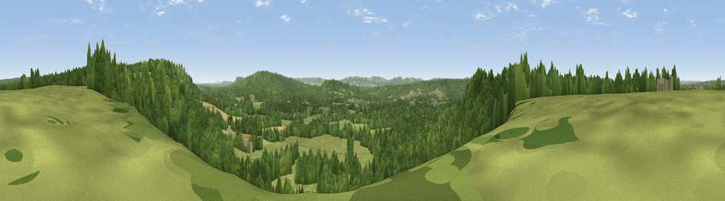

Viewpoint near Milland
#27858 in England · top 30% of its area beats it · near Milland · footpathWhere it is
The exact computed spot (SU 84225 28825). Click the marker for map links.
Public access: a public right of way passes within 12 m of this spot. Computed from Natural England's CRoW access layer and OpenStreetMap rights of way — not the legal definitive map. Always verify locally.
The view, rendered

A 360° render of this exact spot computed from the terrain model, tree cover and land cover — summer colours, afternoon light, calibrated against photographs of famous viewpoints. Real trees, hedges and buildings will differ in detail.
The panorama
Grey silhouette: terrain skyline in each direction (720 bearings, Earth curvature and refraction included). Dashed green: skyline with trees (+15 m) and buildings (+8 m) as obstacles. Blue strip: how far the ground is visible on each bearing.
Where the view opens
Wedge length = distance to the farthest visible ground on that bearing (vegetation-aware). Rings at 10, 25 and 50 km.
What fills the view
65% woodland · 31% grassland · 4% cropland
Angular shares of the visible panorama (visual magnitude), not map area. Landscape diversity 0.34 (0–1 Shannon).
Key numbers
More beautiful places nearby
The staircase of upgrades: each row has a higher view potential than everything closer. Driving times are estimates from straight-line distance, calibrated against real road routing — check an actual route before setting out.
| Place | Direction | Drive | Score |
|---|---|---|---|
| Viewpoint near Liphook | ENE · 1 km | ~2 min | 46.2 |
| Viewpoint near Milland | WSW · 1 km | ~2 min | 48.2 |
| Viewpoint near Lynchmere | E · 2 km | ~4 min | 62.2 |
| Viewpoint near Fernhurst | E · 8 km | ~16 min | 75.1 |
| Beacon Hill | SSW · 11 km | ~21 min | 85.8 |
| Chanctonbury Ring | ESE · 34 km | ~52 min | 87.0 |
| Viewpoint near St. Lawrence | SSW · 59 km | ~82 min | 88.2 |
| Viewpoint near Niton | SW · 63 km | ~86 min | 89.2 |
51.05260, -0.79973 · source: screening · position refined by local search. Computed location — check access rights before visiting.